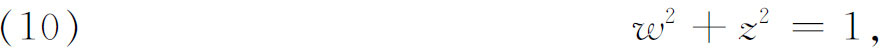
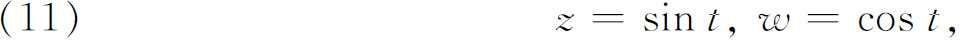
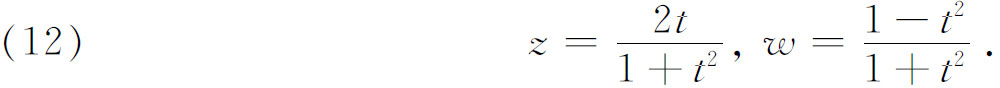
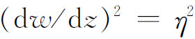
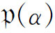
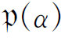

5．单值化问题
后来克莱布什把注意力转向所谓曲线的单值化问题。首先说明这个问题的含义。已给方程

把它表示成参量形式

或参量形式

这样，即使（10）定义w为z的多值函数，我们也能把z和w都表示成t的单值函数。称参量方程（11）或（12）把代数方程（10）单值化。
对亏格0的方程f（w，z）＝0，克莱布什(36)证明每个变量能够表示成单个参量的有理函数。这些有理函数都是单值化函数。当f＝0解释为一条曲线时，则称它为有理曲线。反之，若f＝0的变量w与z能够用一个任意参量有理表示出，则f＝0的亏格为0。
克莱布什在同一年(37)证明当p＝1时w与z能够表示成参量ξ与η的有理函数，其中η2是ξ的三次或四次多项式。于是f（w，z）＝0，或相应的曲线，称为双有理的，这是凯莱所引进的名词(38)。它也叫做椭圆的，因为方程

导致椭圆积分。我们也说w与z可表示成为单参量α的双周期单值函数，或者表示成为
的有理函数，这里
是魏尔斯特拉斯函数。克莱布什用一个参量的椭圆函数把亏格1的曲线单值化，这一成果使他有可能证明这些曲线有关拐点、密切锥、从一点到曲线的切线等值得注意的性质，其中有些性质虽早有证明但却极其困难。对于亏格为2的方程f（w，z）＝0，布里尔（Alexander von Brill，1842—1935）证明了(39)变量w与z能够表示为ξ与η的有理函数，其中η2现为ξ的五次或六次多项式。
这样，亏格为0，1，2的函数能够单值化。对亏格大于2的函数f（w，z）＝0，当时的想法是用更一般的函数，即自守函数。在1882年克莱因(40)给出一个普遍的单值化定理，但其证明是不完全的。在1883年庞加莱发表了他的一般单值化定理(41)，但他也没有完全的证明。克莱因与庞加莱两人继续努力证明这个定理，但在25年间没有决定性的成果。在1907年庞加莱(42)与克贝（Paul Koebe，1882—1945）(43)各自独立给出这一单值化定理的证明。克贝于是把这个结果推广到许多方面。现在既已严密地建立了单值化定理，那就有更好的办法来处理代数函数及其积分了。